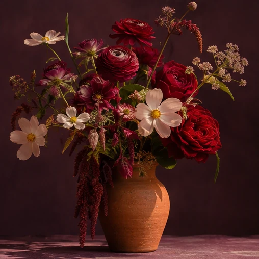

Escolha a paleta, a escala e a apresentação. Compare as referências enquanto monta o seu pedido.

Para um aparador pequeno ou uma mesa lateral.
BH-DEMO-001
Simulação local. A seleção fica nesta página.